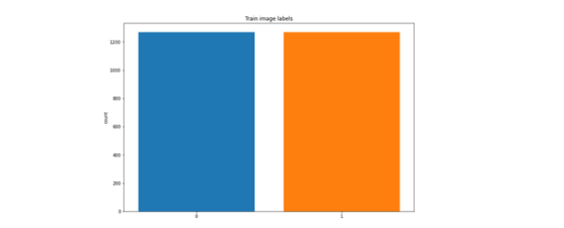
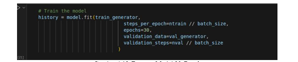
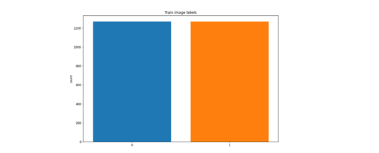
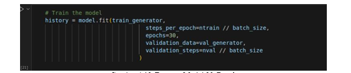
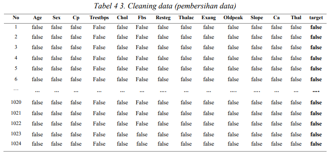
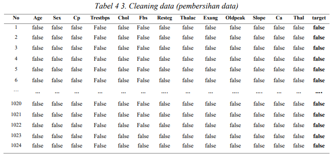

Portfolio Details

 





Project information
- Category: AI Machine Learning & Data Analyst
- Project Type: Base On Project
- Project date: Nov 20, 2024
- Project Project Status: Completed 08 january 2025
Detection and Measurement of Detection Accuracy Levels of Autistic Faces Using a Convolutional Neural Network Model
In this project, I developed an autistic face detection system and improved its accuracy using a Convolutional Neural Network (CNN) model, specifically VGG16. This system is designed to assist in the analysis and identification of autistic faces with higher precision, making it potentially useful for research and AI-based applications. To enhance the model’s performance, I implemented transfer learning and evaluated its results using a confusion matrix. With a dataset of 2,540 images (1,270 autistic face images and 1,270 non-autistic face images), the model achieved an accuracy of 71%. Additionally, I conducted data visualization and model evaluation analysis, including heatmaps of the confusion matrix, accuracy and loss graphs during training, and dataset distribution visualization. These visualizations provided deeper insights into data patterns, helped assess model performance, and optimized parameters to improve detection accuracy. For this project, I utilized several libraries, such as: TensorFlow and Keras for building and training the CNN model, OpenCV for image processing and face detection, NumPy and Pandas for data manipulation and preprocessing, Matplotlib and Seaborn for visualizing data, model performance, and results. This project demonstrates my expertise in machine learning, data analysis, image processing, and data visualization, aligning with my specialization in data processing and software engineering.


 



Project information
- Category: Machine Learning & Data Analyst
- Project Type: Final Research
- Project date: 9 Aug 2023
- Project Project Status: Completed 08 Oct 2024
Implementation of the Naïve Bayes Algorithm for Heart Disease Prediction Using the TensorFlow Library.
In this project, I developed a heart disease prediction system using the Naïve Bayes algorithm, implemented with the TensorFlow library. This system aims to analyze risk factors for heart disease based on patient data and predict the likelihood of a person developing the disease. I utilized a medical dataset containing various health parameters, such as blood pressure, cholesterol levels, heart rate, and other risk factors. The Naïve Bayes model was chosen for its ability to handle independent variables and its high computational efficiency. In the development process, I used several supporting libraries, including: TensorFlow for building and training the model, Scikit-learn for data preprocessing and model evaluation, Pandas & NumPy for data manipulation and analysis, Matplotlib & Seaborn for visualizing the analysis results and model performance. I performed data preprocessing, model training, and performance evaluation using metrics such as accuracy, precision, recall, and confusion matrix to assess prediction effectiveness. Additionally, I created data visualizations to provide deeper insights into data patterns and model performance. Through this approach, this project showcases my expertise in machine learning, data analysis, and the utilization of TensorFlow along with other supporting libraries for health data processing, aligning with my interest in data analysis and software engineering.


Project information
- Category: System Engineer
- Project Type: Training from the platform BISA AI
- Project date: 9 jun 2022
- Project Project Status: Completed 16 Jun 2022
Mask Detection System during COVID-19
In this project, I developed a Mask Detection System to identify whether individuals are wearing face masks during the COVID-19 pandemic. The system utilizes OpenCV for real-time face detection and image processing, designed to detect whether a person is wearing a mask or not based on facial images. Using OpenCV, I implemented the Haar Cascade classifier for face detection, followed by applying machine learning techniques for mask classification. The model identifies faces in the image, and through a simple classifier, it determines if the person is wearing a mask or not. The system operates in real-time, ensuring immediate feedback for compliance with safety protocols. I performed various optimizations for accurate detection, including resizing images, enhancing facial feature recognition, and fine-tuning the model for reliable performance in different lighting conditions and environments. This project demonstrates my proficiency in image processing using OpenCV, particularly for real-time applications, and highlights my skills in software development for real-world problem-solving.